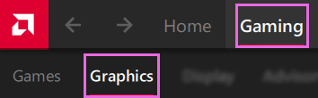
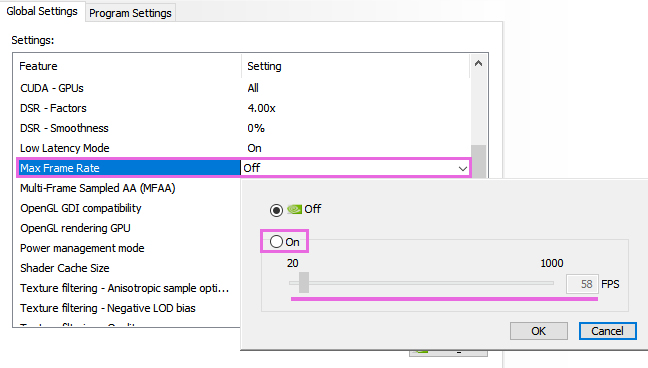
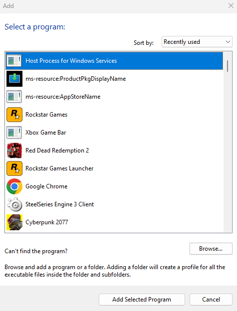

Limiting Your Game’s Framerate
A high FPS (Frames Per Second) can sometimes prevent shaders in ReShade from functioning optimally.
This guide offers multiple methods to help you limit your game’s framerate.
AMD Adrenalin | Driver-Based (For AMD GPU only, Affects All Games)
Here’s how you can use AMD Adrenalin’s Frame rate target control feature to limit the FPS of your games:
This impacts all games on your system.
Step 1: Access Adrenalin
-
Easiest Method: Right-click your desktop and select
AMD Software: Adrenalin Edition.
-
Alternative: Search for
Adrenalinin the Windows Search Bar.
Step 2: Activate “Frame rate target control”
- Click on
Gamingin the top bar and selectGraphics.  - In the
Graphicstab, go to theAdvancedsection and enableFrame rate target control.
- Adjust the
Max FPSas per your preference.
NVIDIA Control Panel | Driver-Based (For NVIDIA GPU only, Affects All Games)
Here’s how to use NVIDIA’s Control Panel in order to globally limit the FPS of all your games:
This impacts all games on your system.
Step 1: Access NVIDIA Control Panel
-
Easiest Method: Right-click your desktop and select
NVIDIA Control Panel.
-
Alternative: Search for
NVIDIA Control Panelin the Windows Search Bar.
Step 2: Modify 3D Global Settings
- On the left, click
Manage 3D Settings.
- Switch to the
Global Settingstab.
- Activate
Max Frame Rateand select a value between 20 and 1000. 
NVIDIA Control Panel | Driver-Based (For NVIDIA GPU only, Specific Games)
Here’s how to use NVIDIA’s Control Panel in order to globally limit the FPS to specific games:
Step 1: Access NVIDIA Control Panel
-
Easiest Method: Right-click your desktop and choose
NVIDIA Control Panel. -
Alternative: Search for
NVIDIA Control Panelin the Windows Search Bar.
Step 2: Modify Per-Game 3D Settings
- On the left, click
Manage 3D Settings. - Navigate to the
Program Settingstab.
- Click
Addto the right ofProgram to customize:.
- Choose the game you want to limit. 
- Enable
Max Frame Rateand choose a value between 20 and 1000.